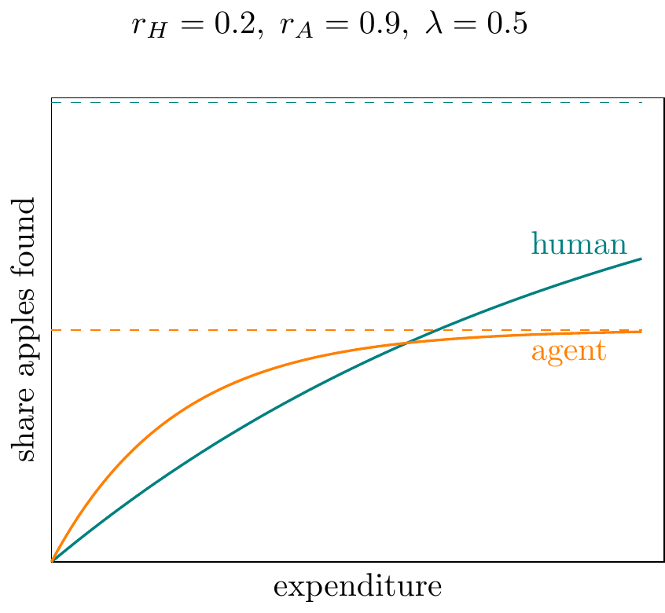
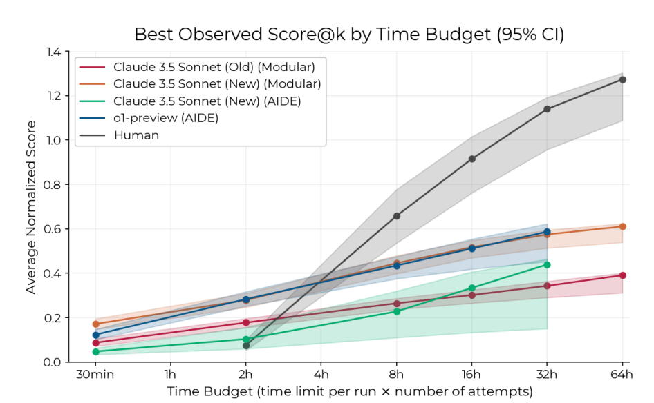
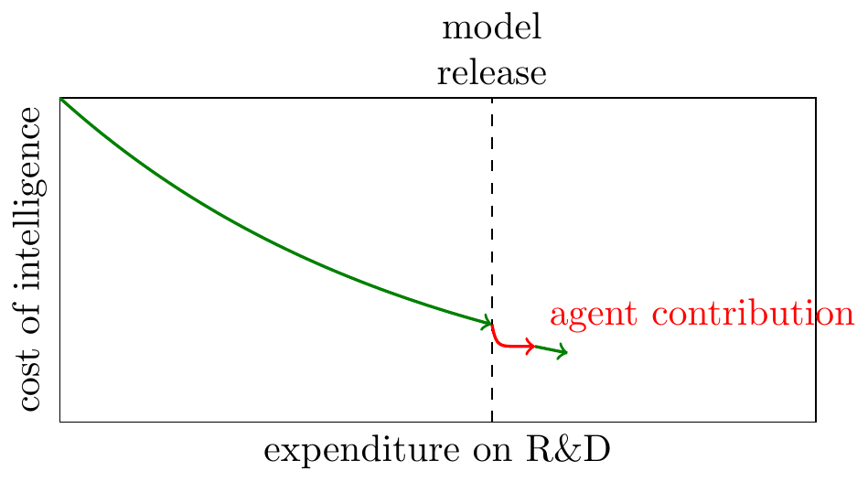
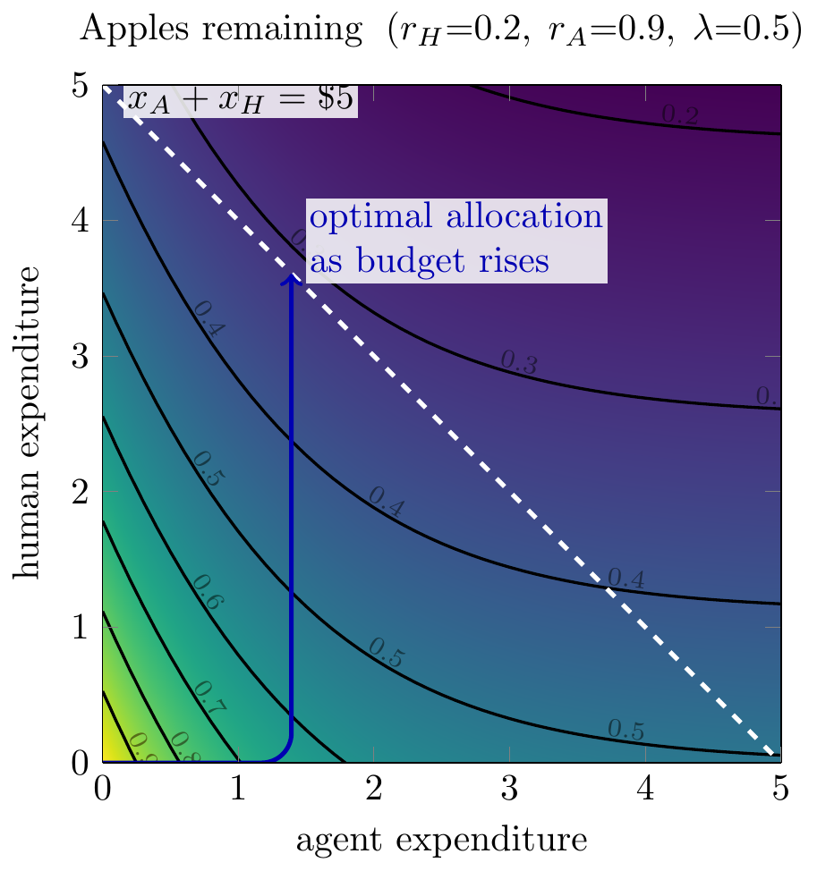
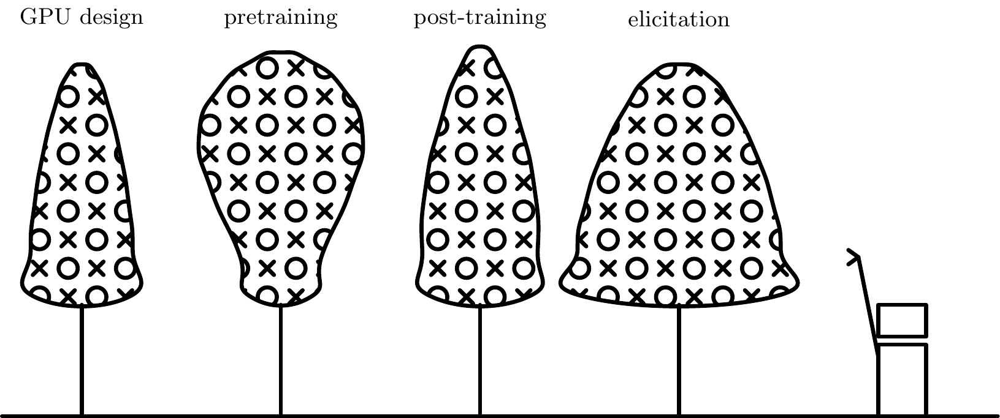
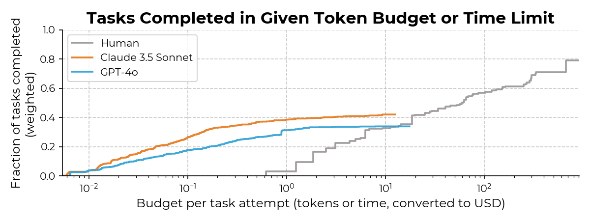
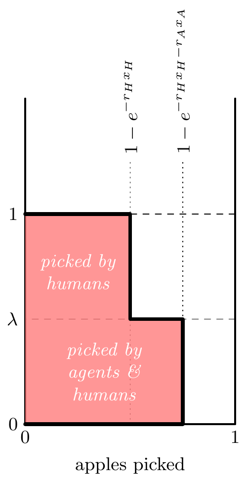

Thanks to Nate Rush, Manish Shetty, Thomas Kwa, Basil Halperin, Tom Houlden, & Parker Whitfill for comments.
- A simple model for AI R&D.
-
There are signs that AI agents are able to make genuine contributions to to AI R&D, how should we interpret this? Is recursive self-improvement imminent?
Here I describe a simple “apple-picking” model of optimization problems in which AI agents can make genuine autonomous contributions, without being able to replace human researchers. I’m not confident that the model is correct, maybe we are indeed on the verge of AI takeover, but I find the model helpful for thinking about what evidence we would need.
An agent helping you to optimize an algorithm is like a robot helping you pick apples. It will take care of all the apples up to a certain height, and it may find apples you haven’t found yet, but there will still be apples out of its reach.
Below I give a formal model but the basic ideas can all be seen in the drawing below. Here both the human and robot have picked four apples, but they’ve left the tree in a very different state, so the robot isn’t ready to replace the human yet:
The graphs below show the contribution of humans & agents over time. The model also implies that humans and agents will be complements in the harvesting of apples (or optimizing algorithms).

The motivation for writing this model was to help think through the implications of recent evidence that AI can push forward the frontier on various optimization and AI R&D problems. If you can spend $100 in tokens to increase the efficiency of a frontier AI training algorithm by 0.1% then this looks like the path to self-improvement, and we’ll be able to replace humans with AI. But realistically the agents have been discovering shallow improvements to algorithms. The idea is not original, it already exists in cliche form (“low hanging fruit”), but I still found it useful to formalize it.
| Robots picking apples | Agents finding optimizations |
|---|---|
| Robots can find low apples that humans have not picked yet. | Agents can find improvements on state-of-the-art optimization problems. |
| Robots cannot pick all the apples humans can. | Agents cannot do as well as human experts on optimization (even with high inference). |
| Robots are more useful for trees that have never been picked. | Agents are more useful on problems that are not heavily optimized. |
| A tree will yield more apples if it’s harvested by both a human and robots. | An algorithm will be more optimized if both humans and agents work on it. |
| To gauge the ability of robots we want to measure the highest apple they can reach. | To gauge the value of agents we want to test for the maximum depth of optimization they can find. |
- Some implications for AI R&D.
-
We start with the simplest model of AI progress:
- There is a fixed mapping from training expenditure to general-purpose model intelligence.
- The cost of reaching a given level of intelligence has been falling by 5X per year.
- Training expenditure has been increasing by 5X per year.
We can draw this as follows:

Humans have been painstakingly pushing those blue curves to the left. We now are seeing clear signs of agents joining the effort and contributing to that leftward movement, and we want to know what to expect.
The apple-picking model gives us some broad implications:
- We should benchmark agent AI R&D ability against the frontier, which represent cumulative human effort, rather than against toy problems and the effort of a single human.
- Observing an agent improve the frontier (push the curve left) does not imply that agents can replace humans, because they may be only picking low-hanging fruit.
- The effects will show up in parts of the AI stack that have low-hanging fruit, e.g. where there’s a lot of fairly natural ideas to try but we are bottlenecked on execution.
Discussion
- We can apply the model to recursive self-improvement.
- It’s also possible to close this model, where agent R&D contributes to the next generation of agent ability. This is like assuming that a robot can eat apples they harvested & grow taller. The condition for explosive growth is simple: it will happen when eating the apples within a one-foot slice of the tree are sufficient for the robot to grow another foot.
- Relation to other models of AI R&D.
-
The critical distinction between this model and others is how we represent the state. Most existing models summarize the level of productivity (or stock of knowledge) with a single number, meaning there’s no distinction between a shallow and deep contribution to the state of knowledge. The model I’m using here allows us to represent the state with two numbers: the share of apples picked above \(\lambda\), and the share below \(\lambda\). For the RSI version of the model we instead track the current level of capabilities (\(\lambda_n\)) and the share of apples picked above that threshold.
Most existing models of recursive self-improvement assume that either AI accelerates or replaces human R&D researchers. I believe this is roughly true for Aghion, Jones, and Jones (2019), Davidson (2021), Erdil et al. (2025), Davidson et al. (2026), Jones (2025), Kwa (2026). These models then calibrate the effect through (1) how much does AI accelerate R&D workers; (2) how much do R&D workers contribute to our stock of knowledge.
However there is some awkwardness in fitting these models to the data:
- It is hard to reconcile these models with evidence that AI is already autonomously contributing to AI research, yet still not replacing humans (i.e. autonomous agents are not perfect substitutes for humans).
- Models with human replacement typically assume a limited number of AI R&D agents (e.g. Davidson et al. (2026)), because having an infinite number of R&D agents would cause immediate explosive growth. But it’s hard to motivate why we would have a small number, rather than scaling the number of agents up to the limits of compute.
Kokotajlo et al. (2025) models AI and human “research taste”, though I don’t have a clear idea exactly how taste is aggregated.1
- Things to add.
-
Landscape. A more general version would model the entire landscape. You can represent an optimization problem as \(y=f(\bm{x})\), where you’re trying to choose an \(\bm{x}\) to maximize \(y\), given some unknown \(f(\cdot)\). (talk about non-additivity of optimizations; talk about conditions under which landscape is separable, and so each subspace is an independent apple; talk about path dependence).
Relation to time horizon. You could think of the high apples as long-time-horizon tasks, i.e. tasks that AI agents are relatively worse at performing.
Shape of the tree. You can extend the model such that apples are non-uniformly distributed, then we can replace \(\lambda\) with \(F(\lambda)\) below. We can then talk about types of domain which are bottom-heavy (most optimizations are pretty easy to find) vs top-heavy (most optimizations are hard to find). It then becomes important to know whether AI R&D is relatively more bottom-heavy or top-heavy, if the former then we might already be on the brink of an intelligence explosion.
Directed search. We assumed that the probability of finding an apple is independent of other apples already found. Realistically people have an ability to put direct their attention to finding new innovations. This implies lower diminishing returns to expenditure, and higher complementarity between agents and humans, I’m not sure whether it would change the qualitative conclusions of the model.
Bottlenecks. Some R&D is bottlenecked not just by thinking (which agents can do), but also by running experiments.
Acceleration. This model is missing the effect of acceleration through explicit cooperation – e.g. a human comes up with an idea, and an agent executes it. This seems very likely to be an important contribution to AI progress.
Sketch of a quantitative model of LLM training. LLM training is a big stack of algorithms, which we’ve been optimizing at perhaps 10X/year. Would be useful to add some speculation about which parts of the stack have low-hanging fruit.
Model
- Setup.
-
There is a continuum of apples spread uniformly on the real line.
A human can find apples over \([0,1]\), but an agent can only find apples over \([0,\lambda]\), with \(\lambda < 1\) (at least for now).
Humans find apples at rate \(r_H\), agents find apples at rate \(r_A\), and we use \(t_H\) and \(t_A\) to represent the time humans and agents spend searching (you can also interpret \(t_H\) and \(t_A\) as monetary expenditure).
We can then derive apples picked:
\[\text{share apples picked}= \underbrace{\lambda(1-e^{-r_Ht_H-r_At_A})}_{\text{apples from bottom of tree}}+\underbrace{(1-\lambda)(1-e^{-r_Ht_H})}_{\text{apples from top of tree}}.\]
- Implication: agents asymptote to a lower level than humans.
-
Here we illustrate agent-only and human-only search curves: the agent curve rises more quickly (\(r_A>r_H\)), but asymptotes to a lower level (\(\lambda<1\)).

We see roughly this shape when comparing human and AI scaling on continuously-scored AI R&D tasks, e.g. in RE-Bench (Wijk et al. (2025)):

RE-Bench scaling - Implication: agents can improve on human SoTA, but only by a limited amount.
-
The plot below shows the returns on human and agent performance. The y-axis shows human-only performance, this can be interpreted as performance for a single human or cumulative performance of humanity. We can see that, at each vertical point, one can move to the right (adding agent optimmizations) and increase the score, but only by a limited amount.

- Implication: the agent asymptote depends on the starting point.
-
The plot below shows a variety of agent trajectories, each starting after a different amount of human work.
You could interpret this as starting an agent at different points in the history of optimizing some algorithm, e.g. nanoGPT.
The model implies that if you start an agent from the original unoptimized version of an algorithm it will quickly make high gains, but asymptote to a value well below the human state-of-the-art.
If you start an agent after a some human optimization has been performed the agent will contribute less at first (some of the apples have already been picked), but it will be able to achieve a higher asymptote.

Extension: Recursive Self-Improvement
- Now let the robot’s height depend on apples harvested.
-
The previous model applied to agents working on an arbitrary optimization problem. Now we focus on agents working on AI R&D, which in turn increases agent ability.
We make a few changes:
- We now track progress in picking apples over periods, where each period represents a generation of AI models, and we assume that agents pick all the apples available to them each period (apples below \(\lambda_n\)). This makes things easier to model because the state of the tree can be summarized with just two variables, \(\lambda_n\) and \(h_n\). It also seems like a reasonable assumption: AI research labs will keep spending money on agent-optimizing their algorithms until there are low returns to additional use.
- We assume that the agent’s ability in period \(n+1\) is a function of AI R&D progress in period \(n\) (the robot is eating the apples and getting taller). It turns out that we can get a simple closed-form solution when this function is linear. To add a touch of realism we assume that agents have no meaningful ability to do R&D until algorithmic progress passes some minimum threshold (\(\bar{a}\)).
- Implications:
-
- We will eventually get superhuman progress (robots will be taller than humans) iff \(\alpha + \beta(1-\bar{a}) > 1\).
- Agent height will be explosive iff \(\beta > 1\), i.e. if eating all the apples in a 1-foot slice of tree causes you to grow another foot taller. If not, it converges to a finite height \(\lambda^*\).
State variables and dynamics
- Assumptions.
-
- Apples are distributed uniformly on the real line, as before.
- Human reach is normalized to 1.
- Agent reach in period \(n\) is \(\lambda_n \ge 0\).
- \(h_n \in [0,1]\): human coverage of the human-only band \((\lambda_n, 1]\) by the end of period \(n\).
- Human dynamics.
-
Each period, a fraction \(1-p\) of the remaining human-level band gets picked, so:
\[h_{n+1} = 1 - p(1-h_n), \qquad h_0 = 0.\]
- Apples harvested.
-
(agent + humans, with clipping at 1): \[a_n = \lambda_n + (1-\lambda_n)_+ \, h_n, \qquad (x)_+ \equiv \max\{x,0\}.\]
Agent gets everything up to \(\lambda_n\); humans only contribute on the band of length \((1-\lambda_n)_+\), of which fraction \(h_n\) is covered by period \(n\).
- Self-improvement.
-
(activation threshold \(\bar{a}\), then affine in \(a_n\)): \[\lambda_{n+1} = \begin{cases} 0, & a_n < \bar{a} \\ \alpha + \beta(a_n - \bar{a}), & a_n \ge \bar{a}. \end{cases}\]
Parameters: \(p\) (human speed), \(\bar{a}\) (minimum progress to “turn on” the agent), \(\alpha\) (baseline capability once on), \(\beta\) (strength of recursive improvement). Initial condition \(\lambda_0\) (typically 0).
Conditions
- Agents contributing to AI research.
- With \(\lambda_n = 0\), \(a_n = h_n \to 1\). So the agent can ever turn on iff \(\bar{a} < 1\). If \(\bar{a} \ge 1\), \(\lambda_n \equiv 0\) forever. Activation-time approximation: \(h_n = 1 - p^n \ge \bar{a}\) \(\Leftrightarrow\) \(n \ge \ln(1-\bar{a})/\ln p\); \(p\) mainly shifts when activation happens.
- Getting to superhuman AI research.
-
As \(n \to \infty\), \(h_n \to 1\). If \(\lambda_n < 1\), \(a_n \to 1\); if \(\lambda_n \ge 1\), \(a_n = \lambda_n\). So asymptotically \(\lambda_{n+1} \to f(1)\) with \(f(1) = 0\) if \(1 < \bar{a}\), and \(f(1) = \alpha + \beta(1-\bar{a})\) if \(1 \ge \bar{a}\). So takeoff past human level (eventually \(\lambda_n > 1\)) iff \[\boxed{\alpha + \beta(1-\bar{a}) > 1.}\]
Interpretation: “If the orchard were fully human-level (\(a=1\)), would the next agent be at least human-level?” If not, the system stays below 1. This condition is essentially independent of \(p\).
- Self-sustaining AI research.
-
For \(\lambda_n \ge 1\), \(a_n = \lambda_n\) and \[\lambda_{n+1} = \alpha + \beta(\lambda_n - \bar{a}).\]
Runaway / hard takeoff iff \(\boxed{\beta > 1}\) (roughly geometric growth in \(\lambda_n\)).
Soft takeoff / saturation iff \(\boxed{\beta < 1}\): convergence to \[\lambda^* = \frac{\alpha - \beta\bar{a}}{1-\beta}\] (provided the system crosses 1 first).
Knife-edge \(\beta = 1\): linear growth.

Offcuts
Scaling curves from METR (2024). For most tasks either (1) an agent can do it much cheaper than a human; or (2) an agent can’t do it at all.

(see my earlier post on AI knowledge creation)

References
Aghion, Philippe, Benjamin F. Jones, and Charles I. Jones. 2019. “Artificial Intelligence and Economic Growth.” In The Economics of Artificial Intelligence: An Agenda, edited by Ajay Agrawal, Joshua Gans, and Avi Goldfarb, 237–90. Chicago: University of Chicago Press. https://doi.org/10.7208/9780226613475-011.
Davidson, Tom. 2021. “Could Advanced AI Drive Explosive Economic Growth.” Open Philanthropy 25. https://www.semanticscholar.org/search?q=Could%20advanced%20AI%20drive%20explosive%20economic%20growth.
Davidson, Tom, Basil Halperin, Thomas Houlden, and Anton Korinek. 2026. “When Does Automating AI Research Produce Explosive Growth?” https://www.basilhalperin.com/papers/shs.pdf.
Erdil, Ege, Andrei Potlogea, Tamay Besiroglu, Edu Roldan, Anson Ho, Jaime Sevilla, Matthew Barnett, Matej Vrzla, and Robert Sandler. 2025. “GATE: An Integrated Assessment Model for AI Automation.” arXiv Preprint arXiv:2503.04941. https://arxiv.org/pdf/2503.04941.pdf.
Ide, Enrique, and Eduard Talamas. 2024. “Artificial Intelligence in the Knowledge Economy.” https://doi.org/10.1086/737233.
Jones, Benjamin F. 2025. “Artificial Intelligence in Research and Development.” NBER Working Paper 34312. National Bureau of Economic Research. https://doi.org/10.3386/w34312.
Kokotajlo, Daniel, Eli Lifland, Brendan Halstead, and Alex Kastner. 2025. “AI Futures Model: Dec 2025 Update.” https://blog.ai-futures.org/p/ai-futures-model-dec-2025-update.
Kwa, Thomas. 2026. “Research Note: A Simpler AI Timelines Model Predicts 99% AI r&d Automation in ~2032.” https://www.lesswrong.com/posts/uy6B5rEPvcwi55cBK/research-note-a-simpler-ai-timelines-model-predicts-99-ai-r.
METR. 2024. “An Update on Our General Capability Evaluations.” https://metr.org/blog/2024-08-06-update-on-evaluations/.
Wijk, Hjalmar, Tao Lin, Joel Becker, Sami Jawhar, Neev Parikh, Thomas Broadley, Lawrence Chan, et al. 2025. “RE-Bench: Evaluating Frontier AI r&d Capabilities of Language Model Agents Against Human Experts.” https://arxiv.org/abs/2411.15114.